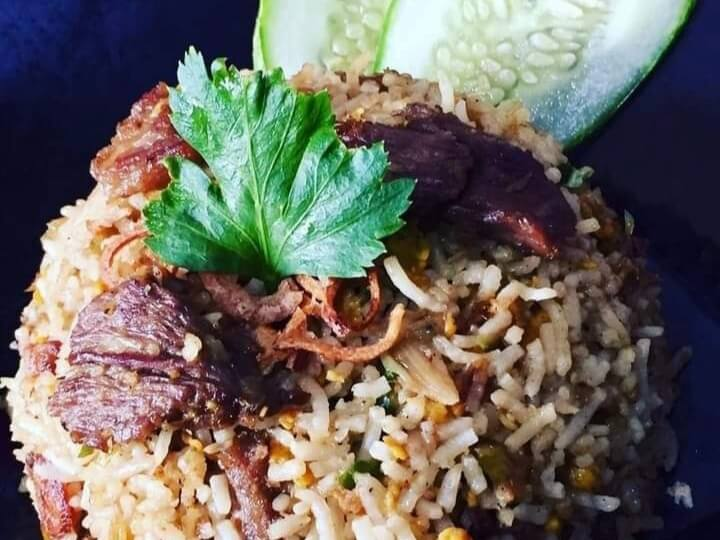

Description
Sumber : Resepi Dunia Masakan
Bahan-bahan
- 4 ulas bawang putih*
- 6 ulas bwg merah kecil*
- 1 inci belacan bakar*
- 3 batang cili padi merah*
- Sedikit garam
- 1 sb air perahan lemon
- 1 sb sos tiram
- 1 sb sos ikan
- 1 kiub pati lembu
- Sedikit daging lembu
- Sayur kobis
- 2 biji telur
- Nasi sejuk
Cara-cara
- Tumbuk bahan-bahan bertanda * dan tumis
hingga pecah minyak dan garing sedikit.
- Kemudian masukkan daging dan kiub pati lembu. Biarkan sehingga daging empuk.
- Masukkan telur, sos ikan, sos tiram, kubis dan nasi sejuk. Perasakan dengan sedikit garam jika perlu. Gaul sebati dan siap untuk dihidang.
Home